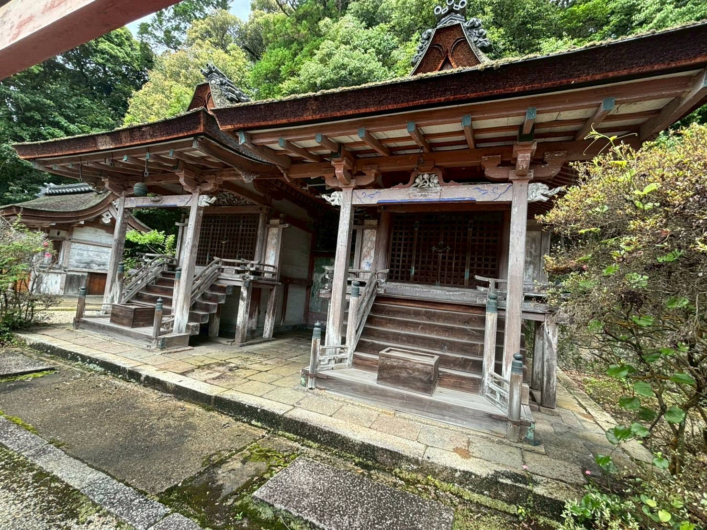
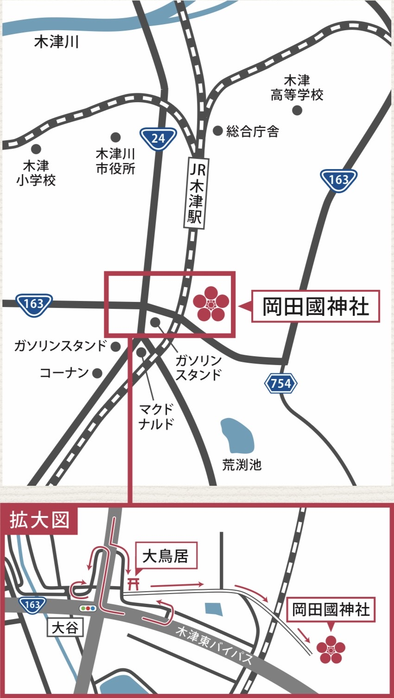

岡田國神社
水と縁を結ぶ杜のやしろ
千年を越えて受け継がれる祈りの場所へようこそお参りくださいました
主な祭典
年中行事の一覧
当神社の背景には広大な山林社有地が広がっています。この土地は徳川家康公により拝領したものとして、その由来が伝えられています。
それによると、天正10年（1582）6月2日、本能寺の変により泉州堺の徳川家康公が急遽、領国である三河に向かったものの、京田辺市草内飯岡付近で主従ともに身の危険を感じ、ここより木津川西岸を上って木津に到着。その地の天神社にて休息し、神主にそこから先の道案内を頼みました。
神主は息子2人に道中の食糧の手配をさせながら、現在の国道163号を東へ、島河原正月堂多羅尾の代官所まで案内し、主従は無事に三河にたどり着くことができたといいます。
慶長9年（1604）京都所司代板倉伊賀守が徳川家康公の命により、堺脱出時の天神社神主の功績に対する褒賞として、境内山林、社領が寄付をされ、当神社の財産として現在に至っており、昭和49年11月、この社有地の一部を日本住宅公団（当時）に買収され、その資金により新社殿の造営をいたしました。
また、鎮守の森「天神山」を東西に縦断する形で国土交通省から用地買収が行われ、令和2年3月（2022）には木津東バイパス（延長0.6km）が整備され供用が開始されました。木津川市内の慢性的な交通渋滞を緩和するとともに、関西文化学術研究都市「木津中央地区」の開発や地域のまちづくりを支援しました。
ご参拝のご案内
- 所在地
- 京都府木津川市木津大谷105番地
- お電話
- 0774-72-8200
お祀りする神々
生国魂尊（いくくにたまのみこと）
菅原道真公（すがわらのみちざねこう）
応神天皇（おうじんてんのう）
比咩神（ひめがみ）
神功皇后（じんぐうこうごう）

本社の創立は斉明天皇の白雉5年
（654）に、生国魂尊をお祀りしたのが始まりと伝えられています。後年、境内敷地を発掘調査したところ、奈良時代前後の土器などはもちろん、はるか1万3000年前の石器までもが多数出土しました。また平成29年、国道163号木津東バイパス事業に伴い行われた発掘調査においては、奈良・平安時代を中心とする遺構が確認されています。
奈良・平安時代に編集された「三代実録」によれば、清和天皇の貞観元年（859）、岡田鴨神社（従五位下）、岡田國神社（従五位上）奉授とあります。また平安時代、『醍醐天皇の勅命により編算された「延喜式」では、月次新嘗大社に列せられています。
明治6年5月、郷社に列せられ、同11年3月には「延喜式」内岡田國神社として確定されました。応仁天皇を祀った八幡宮の創始は天慶元年（938）と伝えられています。平安時代に入り天神信仰が高まり当社も菅原道真公をお祀りして以来、通称天神宮と称され、木津郷五カ村の氏神として信仰を集めながら今日に至っています。
写真をクリックすると、その写真にまつわるお話をご覧いただけます。
人生の節目に、心を込めて
岡田國神社では、人生の節目や日々の願いに合わせた各種御祈祷を
承っております。
ご祈願の種類
内祭式
日本人には古くから人生の節目に神様にお参りし、これまでの成長に感謝したり、今後の安寧や、諸願成就を祈願する習わしがあります。初宮詣、合格祈願、厄除祈願、安産祈願をはじめ、様々なご祈祷を執り行っています。
初宮詣
七五三詣
身体健全
交通安全
安産祈願
合格祈願
外祭典
ご指定の場所へ神職が伺い、祭典を執り行います。
地鎮祭
竣工祭
清祓い
工事安全祈願祭
その他各種祭典
※ 内祭式・外祭典は必ずご予約をお願いします
所在地
〒619-0214
京都府 木津川市 木津大谷105番地
電車でお越しの方
- JR関西本線・奈良線・学研都市線「木津」駅より徒歩約15分
